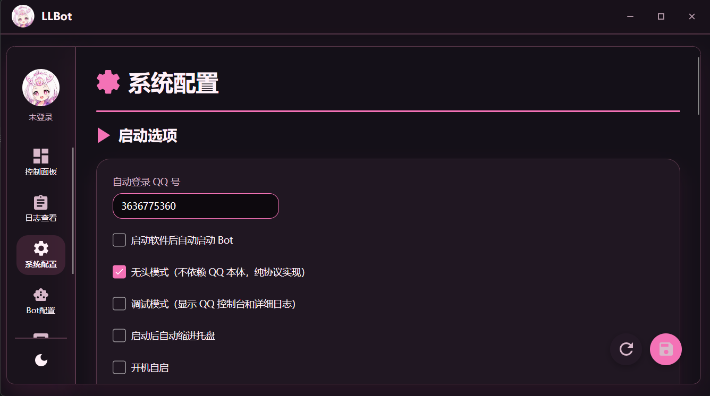
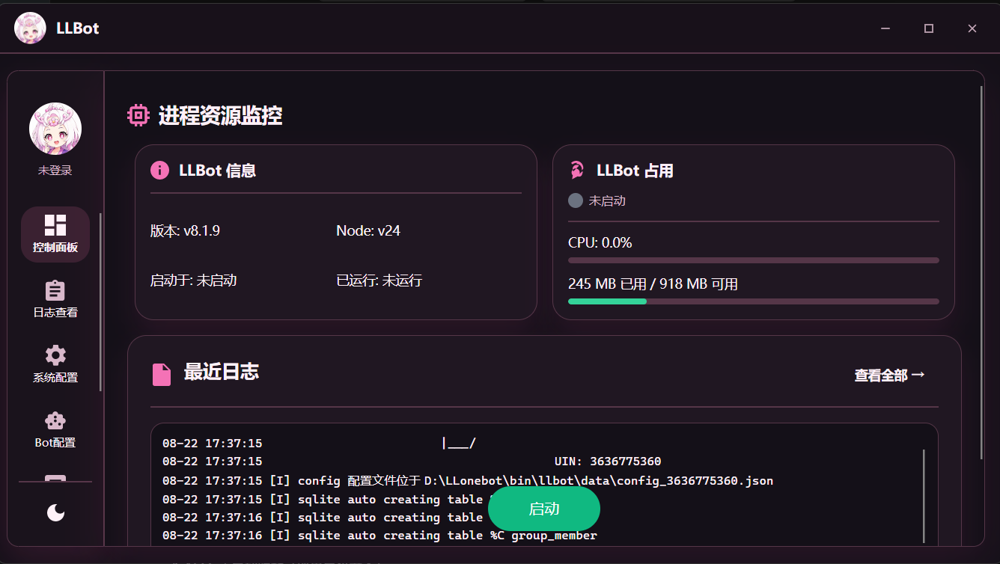
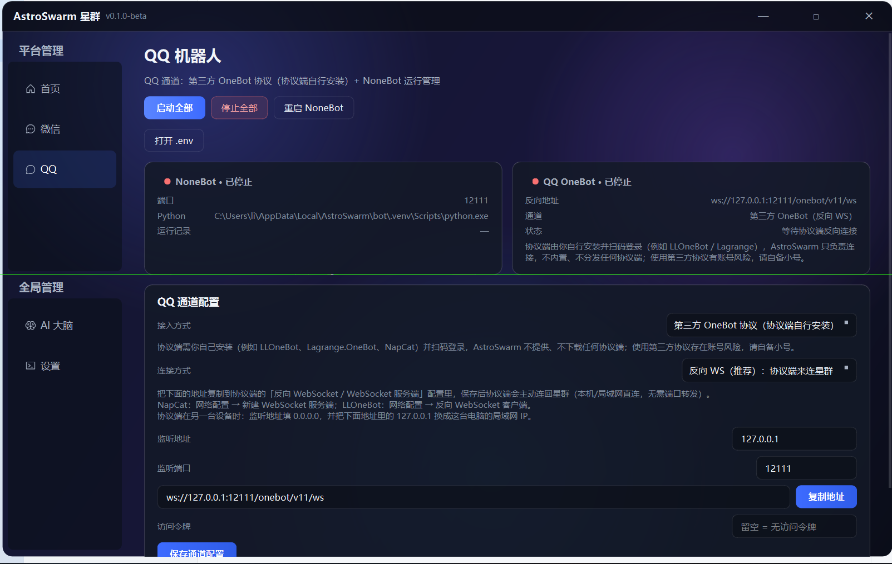
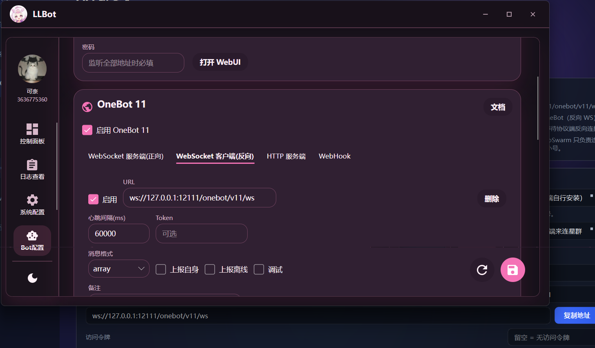

AstroSwarm 星群 · 客户配置指南
适用：在 Windows 上用 LLOneBot（LLBot）无头模式登录 QQ 小号，通过反向 WebSocket 主动连接星群客户端，让星群里的 NoneBot / AI 大脑接管 QQ 机器人。全程大约 5 分钟。
|
重要声明（请先阅读）： 1. 第三方 QQ 机器人违反腾讯用户协议。LLOneBot 等第三方协议端属于未经腾讯授权的非官方登录方式，违反《腾讯服务协议》《QQ 软件许可及服务协议》等条款，账号存在被限制功能、冻结甚至封禁的风险。 2. 星群不提供内嵌式 QQ 通讯协议连接 agent。星群（AstroSwarm）不内置、不提供、不分发任何 QQ 通讯协议层，也不通过 QQ 通讯协议直接连接 agent；星群只实现标准 OneBot v11 对接，协议端由用户自行安装、自行登录、自行维护。 3. 一切行为请用户自行承担。因使用第三方协议产生的一切后果（账号封禁、数据风险、法律风险等）均由用户自行承担，星群不承担任何责任。 4. 强烈建议使用 QQ 小号测试，不要使用主号。 |
进入 LLBot 控制面板 →「系统配置 → 启动选项」，按下表设置：

图 1：LLBot 启动选项（配置 QQ）
回到控制面板启动 Bot，此时会出现 QQ 登录二维码，用 QQ 手机端扫码；登录成功后回到控制面板确认：小号 UIN 已显示、配置文件已自动生成。

图 2：LLBot 控制面板（登录成功确认）
打开星群客户端 →「QQ 机器人」页，接入方式选「第三方 OneBot（反向 WS，推荐）」，点「复制地址」。
复制到的地址为：ws://127.0.0.1:12111/onebot/v11/ws
要点：监听端口默认 12111（跟随星群 NoneBot 端口）；访问令牌先留空（第 4 步也留空，如设置令牌则两边必须一致）；状态显示「等待协议端反向连接」是正常的，LLBot 连上后变已连接。

图 3：星群客户端反向 WS 地址
回到 LLBot 控制面板 →「系统配置 → 网络配置（OneBot 11）」→「WebSocket 客户端（反向）」，点击添加/编辑，按下表填写：
| 配置项 | 填写内容 |
| 启用 OneBot 11 | 开启 |
| WebSocket 客户端（反向） | 开启 |
| URL | ws://127.0.0.1:12111/onebot/v11/ws（第 3 步复制的地址） |
| 消息格式 | array |
| Token / 访问令牌 | 留空（与星群一致；星群设了令牌就填同一个） |
| 上报自身 / 上报离线 | 可选，建议开启 |

图 4：LLBot 反向 WebSocket 配置
保存后，LLBot 会作为客户端主动连回星群，不需要端口转发。
| 问题 | 解决办法 |
| 端口被占用 / 连不上 | 确认 LLBot 的 URL 端口和星群设置里的 NoneBot 端口一致（默认 12111），两个程序不要改得不一样。 |
| 令牌不一致 | 星群「访问令牌」和 LLBot 的 Token 要么都留空，要么填同一个，否则会被拒绝连接。 |
| 无头模式下小号登录不上 | 回「启动选项」确认自动登录 QQ# 填对；若之前用 QQ 本体登录过，确认小号没有被挤下线。 |
| 控制面板登录/绑定失败 | 确认已先在 LLOneBot 官网注册登录并准备好 Token，控制面板首次使用需要用该 Token 登录绑定。 |
| 协议端在另一台电脑 | 星群端「监听地址」改成 0.0.0.0，LLBot 的 URL 里把 127.0.0.1 换成星群那台电脑的局域网 IP（如 ws://192.168.1.10:12111/onebot/v11/ws）。 |
如需进一步协助，请联系星群客服。